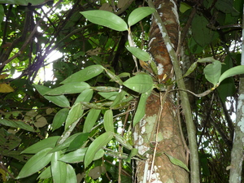

ahew te nanga 
/ʔahɔw_tɔ_naŋa/
n.
orchid variety
Ka ahew te nanga ne bulak su diyè egtubu te sugpang te tungenu ne kayu, kahiyen nu naa ke neuyag pad ka kayu te tungenu bes e su amana ma ne makepal ke egtubu seini ne bulak.
Diyè te sapiling ney dengan su due tungenu ne migtubuan te ahew te nanga, ke egtengtengan nu ne hendue te neuyag pad ka tungenu su makepal amana ka pegtubu te seini ne bulak.
There's an old dead tree in our backyard before which was ahew te nanga kinds of orchids attached and grew, if you see the the old dead tree was like still alive because if this kind of orchids grow it is very thick.
Eng. orchids variety
Online dict status: -
Usage level: R
Updated by: QDL
Last updated: 19/May/2010
This page last updated: 28-Dec-2019
Copyright © 2009-2014, Matigsalug Language Christian Association, Inc